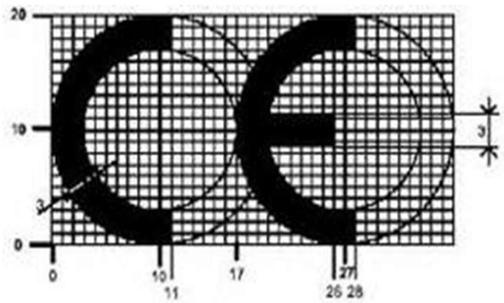
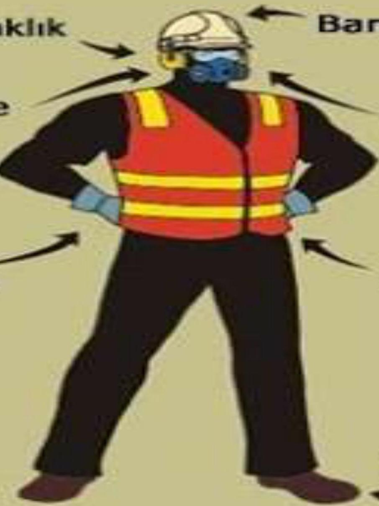
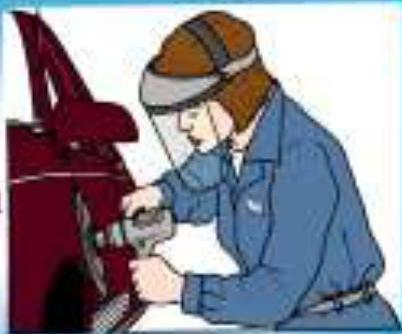
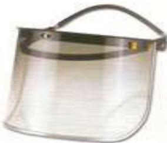
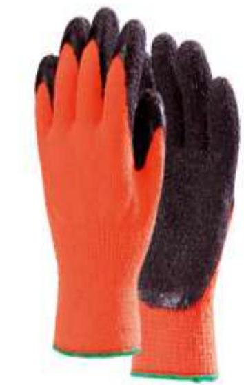
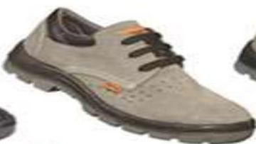
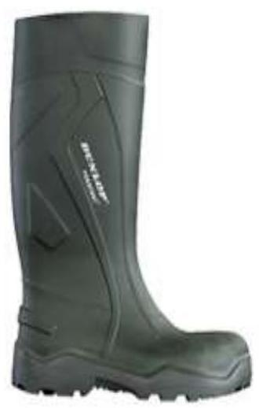

GENEL ÖZET
Bu ders materyali, iş sağlığı ve güvenliğinin (İSG) en kritik unsurlarından biri olan Kişisel Koruyucu Donanımları (KKD) kapsamlı bir şekilde incelemektedir. KKD’lar, risklerin kaynağında yok edilemediği veya toplu koruma önlemlerinin yetersiz kaldığı durumlarda çalışanların sağlığını korumak için başvurulan son koruma aşamasıdır.
Belge içerisinde KKD’ların yasal tanımı, teknik özellikleri, seçim kriterleri, CE işaretlemesi ve kategori sistemleri detaylandırılmaktadır. Ayrıca; baş, kulak, göz, solunum, el, ayak ve vücut koruyucuları başlıkları altında, iş sahasındaki spesifik risklere karşı hangi ekipmanın hangi özelliklerle kullanılması gerektiğine dair pedagojik bir rehber sunulmaktadır.
TEMEL TERİMLER VE KAVRAMLAR
- Kişisel Koruyucu Donanım (KKD): Çalışanı, işle ilgili risklere karşı korumak amacıyla giyilen, takılan veya tutulan her türlü cihaz, alet veya malzemedir.
- CE İşareti (Conformitée Européenne): Ürünün AB direktiflerine uygun olduğunu, insan ve çevre sağlığı açısından güvenli olduğunu gösteren uygunluk işaretidir.
- Pnömokonyoz: Tozlu ortamlarda solunan partiküllerin akciğerlerde birikmesi sonucu oluşan meslek hastalığıdır.
- Kanister: Gaz maskelerinde zararlı gazları filtreleyen, içerisinde aktif karbon gibi bileşenler bulunan filtre kutusudur.
- Paraşüt Tipi Emniyet Kemeri: Düşme riskinin olduğu yüksekte çalışmalarda, vücudu geniş bir yüzeyden kavrayarak yaralanma riskini minimize eden ekipmandır.
- Mekanik Riskler: Çarpma, kesilme, delinme ve ezilme gibi fiziksel etkilerden kaynaklanan tehlikelerdir.
KİŞİSEL KORUYUCU DONANIMIN TANIMI VE KAPSAMI
KKD, bir veya birden fazla riske karşı çalışanı korumak üzere tasarlanmış araç ve gereçleri ifade eder. Ancak her ekipman KKD sayılmaz.
KKD Sayılmayan İstisnalar
- Sıradan iş elbiseleri ve üniformalar.
- Afet müdahale ve acil durum ekipmanları.
- Askeri, kolluk ve istihbarat birimlerinin özel koruyucuları.
- Spor ekipmanları ve nefsi müdafaa araçları.
- Taşınabilir risk saptama ve ikaz cihazları (Dedektörler vb.).
KKD’LARIN GENEL ÖZELLİKLERİ VE SEÇİM KRİTERLERİ
Bir KKD’nın etkin olabilmesi için belirli standartları karşılaması gerekir:
- Ek Risk Oluşturmama: Kendisi yeni bir tehlike yaratmamalıdır.
- Uygunluk: İşyeri koşullarına ve riskin derecesine uygun olmalıdır.
- Ergonomi: Kullanıcının sağlık durumuna ve vücut yapısına tam oturmalıdır.
- Uyum: Birden fazla KKD aynı anda kullanılıyorsa, bunlar birbirinin etkisini bozmamalıdır.
İşveren ve Çalışan Yükümlülükleri
- İşveren: KKD’ları ücretsiz temin eder, eğitimini verir ve hijyenik muhafazasını sağlar.
- Çalışan: KKD’yı talimatlara uygun kullanır, korur ve arıza durumunda işverene bildirir.
CE İŞARETİ VE STANDARTLAR
CE işareti, ürünün bağımsız laboratuvarlarca test edildiğini ve Avrupa standartlarına (EN) uygun olduğunu belgeler.

Infobox
CE işaretinin yanında yer alan rakamlar (örn. CE 1234), üreticinin kalite yönetim sistemini onaylayan kurumun kodunu temsil eder. Ürün üzerinde mutlaka Türkçe kullanım kılavuzu bulunmalıdır.
KKD’LARIN SINIFLANDIRILMASI (KATEGORİLER)
KKD’lar korudukları riskin şiddetine göre kategorize edilirler:
- Kategori 0: Yönetmelik kapsamı dışı.
- Kategori 1 (Basit): Kullanıcının kendisinin fark edebileceği düşük riskler.
- Kategori 2: Kategori 1 ve 3 dışındaki tüm KKD’lar.
- Kategori 3 (Karmaşık): Hayati tehlike, geri dönüşü olmayan sağlık sorunları ve ani gelişen ciddi risklere karşı koruma (Örn: Yüksekten düşme durdurucular, solunum setleri).
ANA GÖVDE: TEMATİK KAYIT VE EKİPMAN ANALİZİ
BAŞ KORUYUCULARI
Baş koruyucuları temel olarak baretler ve saçlı deri koruyucuları olarak ayrılır.
Baret Çeşitleri ve Özellikleri
- Plastik Baretler: 600 V’a kadar yalıtkanlık sağlar. İnşaat, maden ve gemi sanayinde kullanılır. Ömrü yaklaşık 5 yıldır.
- Yalıtkan-Plastik Baretler: 3000 V’a kadar koruma sağlar. Havalandırma deliği veya metal parça içermezler.
- Alüminyum Baretler: Hafif ve ısıya dayanıklıdır ancak elektrik riskinde kullanılmamalıdır.
Baret Renk Kodları (Geleneksel Kullanım)
- Beyaz: Yöneticiler, mühendisler, ziyaretçiler.
- Sarı: İşçiler.
- Mavi: Bakım ekibi, teknisyenler.
- Turuncu: Ustabaşı ve sörveyanlar.
- Kırmızı: İtfaiye, İSG personeli.

KULAK KORUYUCULARI
Gürültünün zararlı etkilerinden (işitme kaybı, stres, yorgunluk) korunmak için kullanılır.
- Türleri: Kulak tıkaçları (plastik/pamuk), kulaklıklar (manşon tipi), baretlere takılabilen kulaklıklar.
- Önemli: Kulak tıkaçları ağrı veya uğultu yapıyorsa uygun boyut seçilmelidir. Hijyen kurallarına dikkat edilmelidir.
GÖZ VE YÜZ KORUYUCULARI
Gözleri uçuşan parçalardan, radyasyondan ve kimyasallardan korur.
- Emniyet Gözlükleri: Toz ve parçacıklara karşı.
- Kapalı (Dalgıç Tipi) Gözlükler: Gaz ve sıvı sıçramalarına karşı tam koruma.
- Yüz Siperleri: Taşlama veya asit aktarımı sırasında tüm yüzü korur.
- Kaynak Siperleri: Ultraviyole ve kızılötesi (infrare) radyasyonu filtreler.


SOLUNUM SİSTEMİ KORUYUCULARI
Toz, duman, gaz veya oksijen azlığı durumlarında hayati önem taşır.
Maske Türleri
- Mekanik Filtreler: Sadece toz ve partikülleri tutar.
- Kimyasal Filtreler: Gaz ve buharları aktif karbon ile emer.
- Hava Beslemeli Sistemler: Dışarıdan temiz hava veya tüpten oksijen sağlar. Oksijenin %19’dan az olduğu kapalı alanlarda şarttır.
Kritik Uyarı
Filtre renginin değişmesi veya nefes almada zorluk, filtrenin dolduğunu ve acilen değiştirilmesi gerektiğini gösterir.
EL VE KOL KORUYUCULARI
El kazaları en yaygın iş kazalarıdır. Koruma tipine göre eldiven seçilmelidir:
- Deri Eldiven: Genel mekanik işler ve orta derece ısı.
- Kauçuk/PVC: Asit ve kimyasallar.
- Çelik Örgü: Kesilmelere karşı (et kesimi, metal şekillendirme).
- Yalıtkan Eldiven: Elektrik işlerinde (Voltaj dayanımı üzerinde yazmalıdır).

AYAK VE BACAK KORUYUCULARI
Ayak koruyucularda “burun koruması” (çelik/kompzit) temel unsurdur.
- İletken Ayakkabılar: Statik elektriği toprağa iletir (patlayıcı ortamlar).
- Yalıtkan Ayakkabılar: Elektrik şokundan korur.
- Çelik Burunlu Ayakkabı: Ayak üzerine ağır malzeme düşme riskine karşı.


GÖVDE VE VÜCUT KORUYUCULARI
- Emniyet Kemerleri: Sadece pozisyon almak içindir, düşmeyi durdurmak için kullanılması bel yaralanmalarına yol açar.
- Paraşüt Tipi Kemer: Düşme riskine karşı tek güvenli seçenektir.
- Yansıtıcı (Reflektörlü) Yelek: Gece veya düşük görünürlükte fark edilmeyi sağlar.
TEMEL FORMÜLLER VE HIZLI BİLGİLER
KKD Seçim Formülü (Risk vs. Koruma)
- Riski Belirle: (Fiziksel, Kimyasal, Biyolojik?)
- Maruziyeti Ölç: (Sıklık, Süre, Şiddet)
- Standart Seç: (EN 166: Gözlük, EN 397: Baret vb.)
- Uyum Kontrolü: (CE işareti var mı?)
- Baret Ağırlığı: Ortalama
300-400 gr. - Elektrik Dayanımı: Plastik baret
600 V, yalıtkan baret3000 V. - Yalıtkan Eldiven:
90.000 Vtest gerilimine3 dakikadayanmalıdır. - Oksijen Sınırı: Havadaki oksijen
%19’un altına düşerse sadece hava beslemeli maske kullanılır.
KAYNAKLAR
- Kişisel Koruyucu Donanım Yönetmeliği
- İş Sağlığı ve Güvenliği Kanunu (No: 6331)
- Avrupa Birliği CE Uygunluk Standartları (EN Normları)